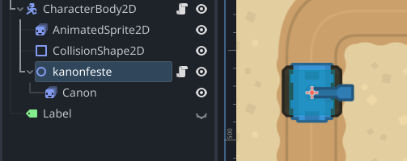
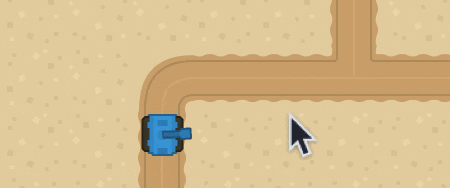
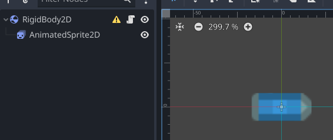
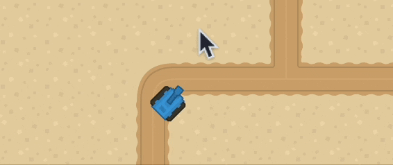

5 - Roter og skyt
Nå skal vi legge til en kanon som skyter mot musepekeren. Vi begynner med å legge til en Node2D, i eksempelet heter den “kanonfeste”, den skal posisjoneres midt på tanksen. under den legger vi til grafikken til kanonen. Den skal peke mot høyre, og bakerste delen skal overlappe kanonfeste.

Så legger vi til et script på kanonfeste, ikke kanonen.
extends Node2D
func _process(delta):
look_at(get_global_mouse_position())
Og det er alt som skal til for å sikte

Neste steg er å lage en kule. Vi setter opp en sene slik, pass på at alt er sentrert, så lagrer vi den som bullet.tscn

Fest et script til kulen med denne koden. I _ready() roterer vi kulen slik at den ser mot musen når den instanciates (spawner), og i _physics_process så setter vi retningen kulen skal fly bassert på sin rotasjon. Vi bruker RIGHT ettersom vi satte opp kulen til å se mot høyre i senen sin
var speed = 800
func _ready():
look_at(get_global_mouse_position())
func _physics_process(delta):
linear_velocity = Vector2.RIGHT.rotated(rotation) * speed
Så kan vi åpne kanon scriptet vårt igjen å legge til dette:
var bullet = preload("res://bullet.tscn")
if Input.is_action_just_pressed("ui_accept"):
var instance = bullet.instantiate()
instance.global_position = Vector2(global_position)
get_parent().get_parent().add_child(instance)
“bullet” variabelen laster inn bullet senen vi lagde tidligere, slik at den er klar til å legges inn når vi skal skyte. det lønner seg å preloade slik vi har gjort her, ellers kan det hende fryser i et par millisekunder hver gang vi skyter å spillet må hente kulen på nytt. bullet.instantiate() lager en instans av kulen i spillet. Dette betyr at vi har lagd en utgave av kulen, den ligger fremdeles å venter til vi sier hvor i senetreet vi skal legge noden. Kanonen er en child node til tanken, og tanken er en childnode av rot noden, vi ønsker at kulen skal høre til rot noden, og ikke tanksen. Om kulen blir en child node av tanksen så vil kulen flytte på seg i forrhold til tanksen, men her ønsker vi ingen kontroll over kulen etter at den er skutt. Derfor bruker vi get_parent() to ganger, og legger instansen av kulen vår som en child node til rot noden.
